Прокси для Telegram (MTProto)
Нажмите на кнопку ниже, чтобы запросить актуальные настройки прокси у бота (откроется диалог в Telegram):
Получить прокси в Telegram-ботеНебольшое видео, как удалить неработающие MTProto подключения
Информация, на которую стоит обратить внимание:
- порт
- ключ (достаточно первых нескольких символов)
Настройка VPN через клиент Happ
- Универсальность: есть версии абсолютно под все платформы
- Удобство: интуитивно понятный интерфейс без лишнего перегруза
- Гибкость: настройки легко импортируются по ссылкам
- Стабильность: здесь нормально работают современные протоколы
- унифицированный клиент позволяет поддерживать одинаковую конфигурацию у всех пользователей
Шаг 1. Скачайте приложение Happ
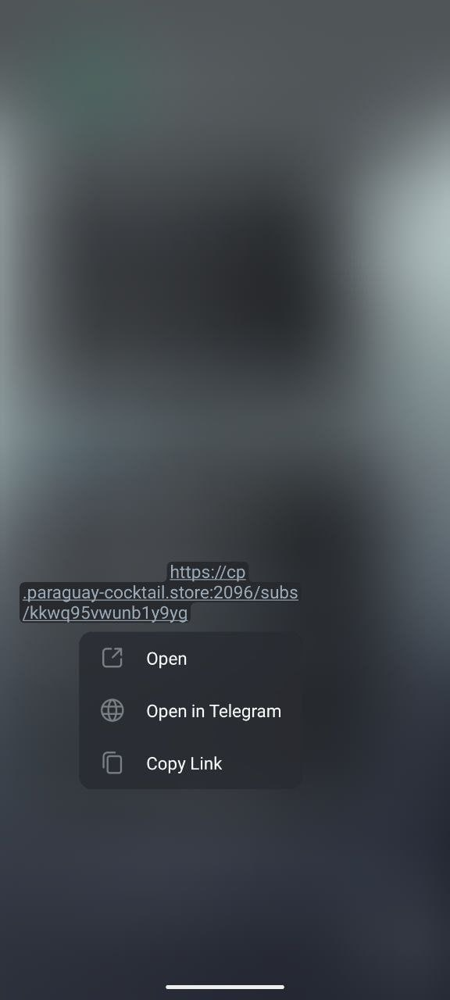
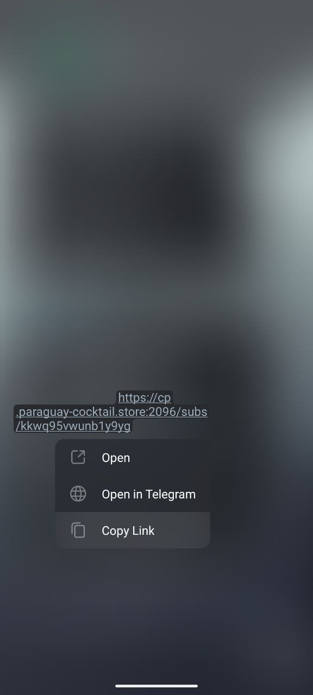
Шаг 2. Запросите первую ссылку подключения
Нажмите на кнопку ниже, чтобы бот прислал вам персональную ссылку Backup VPN прямо в чат:
Запросить Backup VPN в боте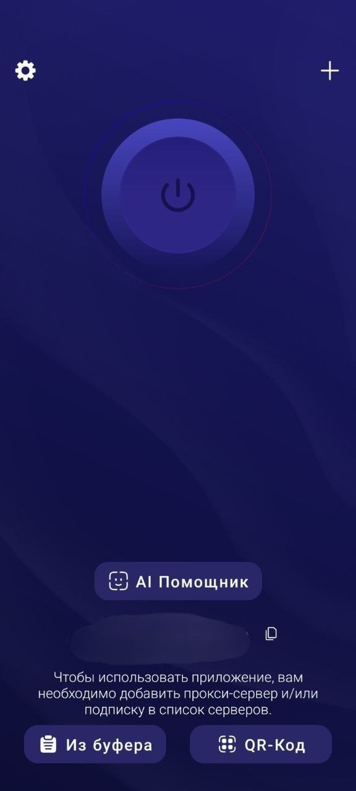
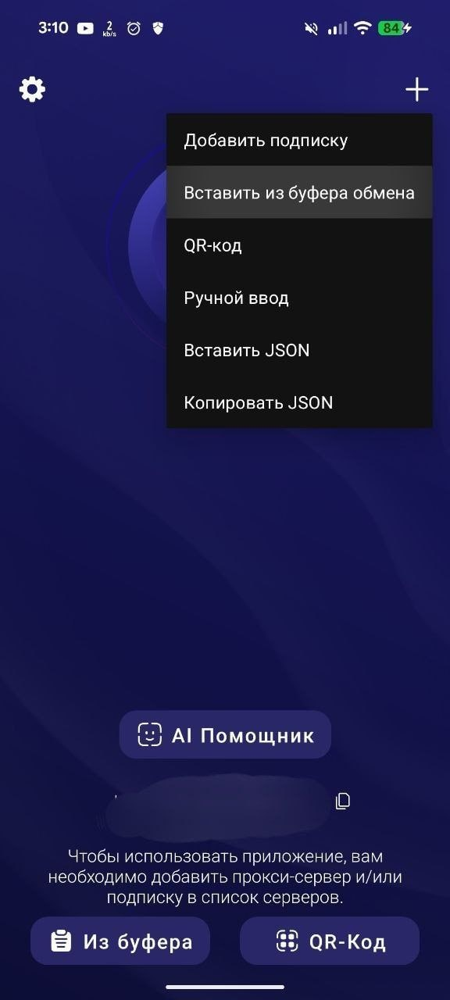
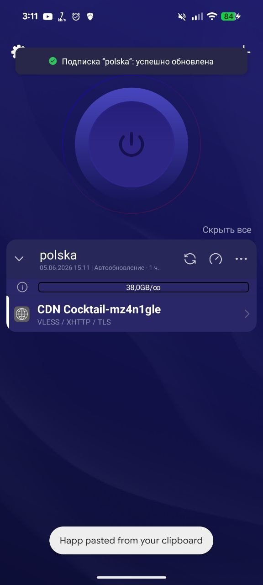
Шаг 3. Добавьте сервер в Happ
ВАЖНО: Если вы открываете приложение впервые, оно само попросит вставить скопированную из бота ссылку.
Если вы уже прокликали стартовые экраны, добавьте ссылку вручную: нажмите на значок плюса (+) в правом верхнем углу.
Шаг 4. Добавьте основной профиль (VLESS / Reality / Trojan)
Запросите в боте ссылку на основной протокол подключения:
Запросить основной VPN профиль в боте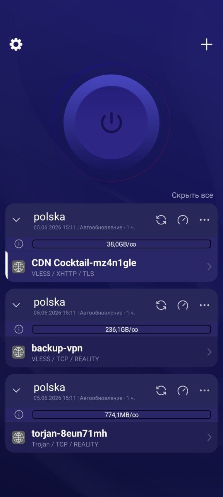
Шаг 5. Как выбрать сервер и включить VPN
Обратите внимание на подключения: белая полоска слева означает, что именно этот сервер сейчас выбран для работы.
Чтобы пустить трафик через VPN, просто нажмите на большую кнопку включения в верхней части экрана.
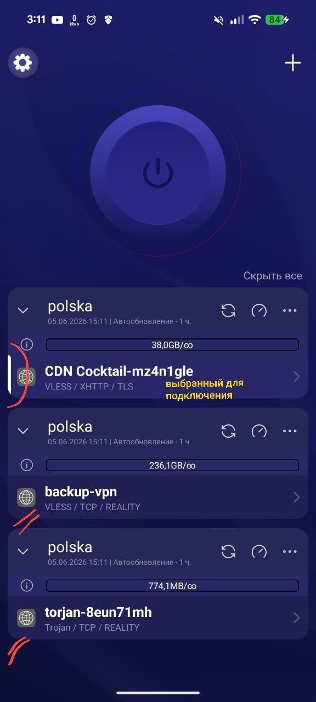
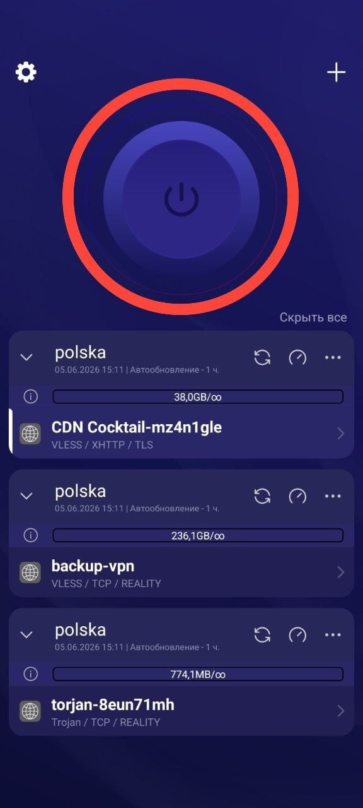
Сплит-роутинг (Раздельное туннелирование)
Сплит-роутинг — это функция, которая позволяет направлять одну часть интернет-трафика через VPN, а другую — напрямую через вашего провайдера.
Шаг 0. Получите профиль маршрутизации
Нажмите кнопку ниже, чтобы бот выслал вам актуальный профиль маршрутизации (содержит правила `domain:ru` для пуска российских ресурсов напрямую без VPN):
Запросить профиль маршрутизации в ботеШаг 1. Откройте настройки
На главном экране приложения нажмите на иконку шестеренки.
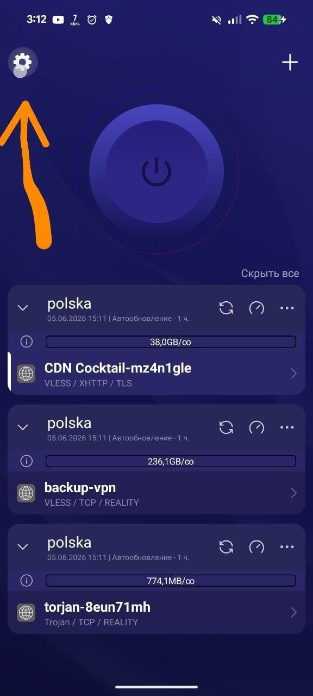
Шаг 2. Перейдите в маршрутизацию
В меню выберите Настройки туннеля -> Маршрутизация.
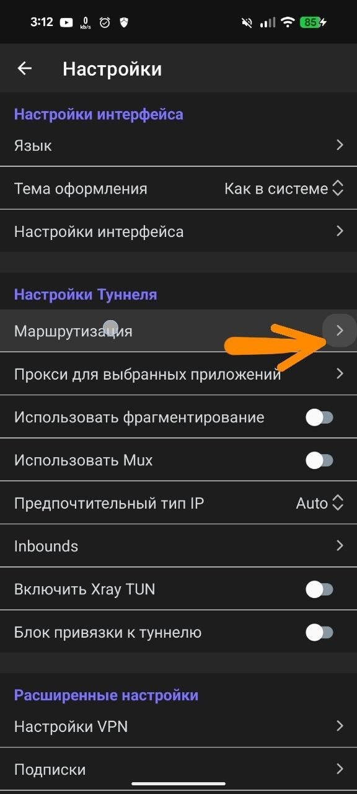
Шаг 3. Откройте меню
Нажмите на значок с тремя вертикальными точками (кебаб-меню) в правом верхнем углу экрана.
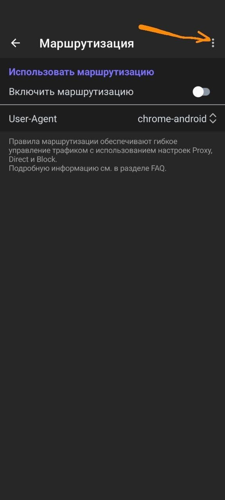
Шаг 4. Импортируйте профиль
В выпадающем списке выберите пункт Импортировать из буфера обмена.
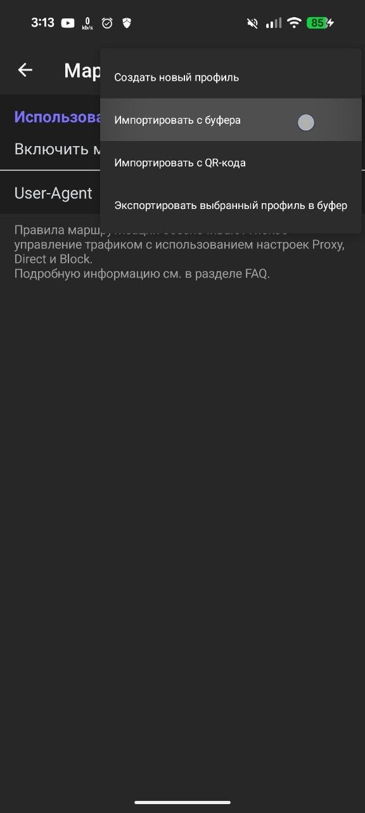
Шаг 5. Проверьте загрузку баз
Убедитесь, что маршрутизация активирована. Затем откройте загруженный профиль (Правила маршрутизации) и проверьте, что оба файла баз данных — geosite.dat и geoip.dat — успешно скачались и загружены в приложение.
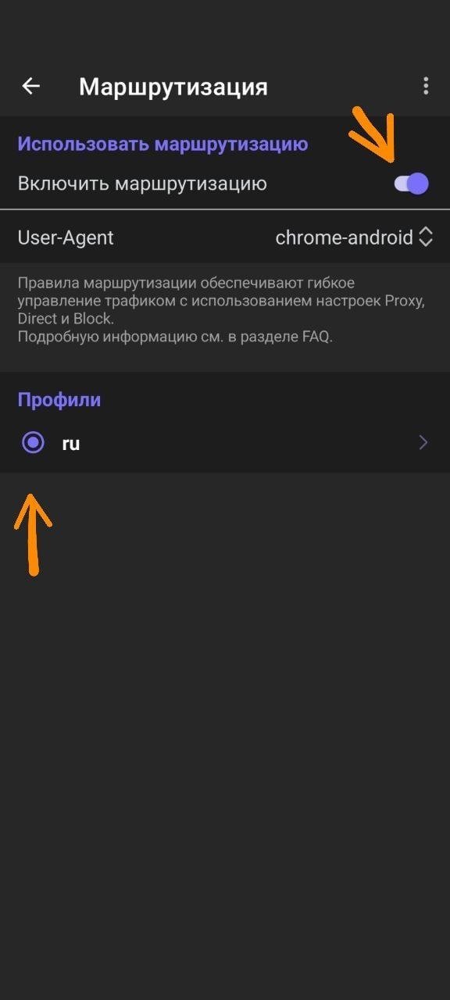
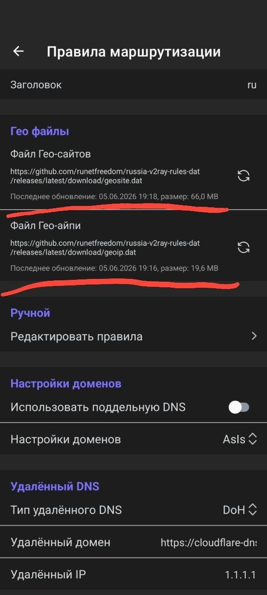
Иногда на главном экране приложения, в левом верхнем углу, может появиться уведомление: «Ошибка загрузки гео файлов». Как это исправить:
- Шаг 1. Перейдите в Настройки (шестеренка) -> Настройки туннеля -> Маршрутизация. В строке вашего активного профиля справа будет гореть красный треугольник с восклицательным знаком. Нажмите на этот профиль, чтобы открыть его.
- Шаг 2. В верхней части экрана вы увидите подробное сообщение: «Гео-файлы повреждены или отсутствуют. Попробуйте загрузить еще раз.»
- Шаг 3. В списке ниже найдите файл (например,
geoip.datилиgeosite.dat), в статусе которого указана ошибка, и нажмите кнопку загрузки рядом с ним, чтобы скачать базу заново.
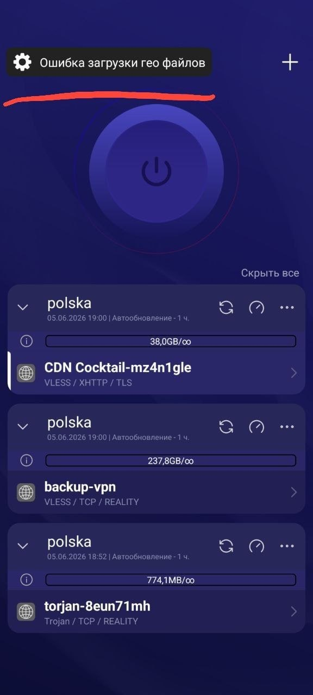
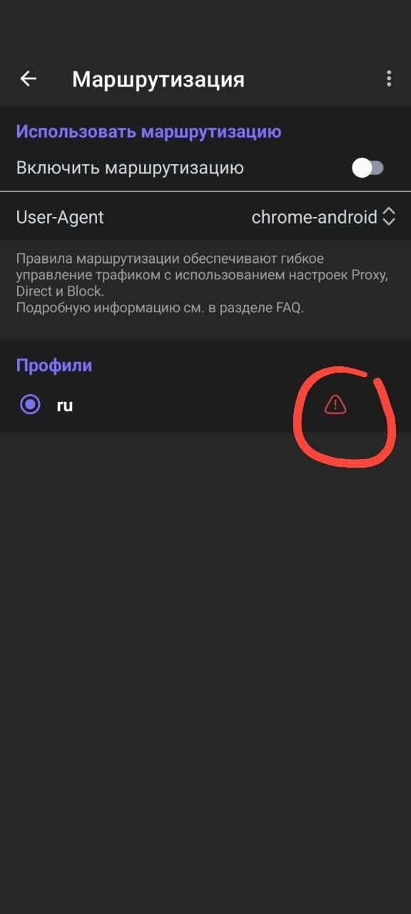
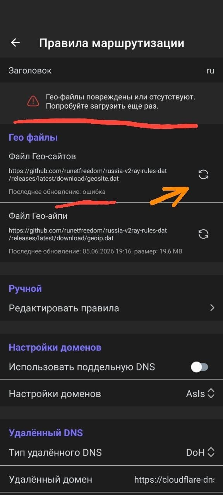
Исключение приложений (Байпассинг)
Байпассинг (от англ. bypass — обход) — это функция, которая позволяет выбрать конкретные приложения, которые будут выходить в интернет напрямую, минуя VPN.
Как это работает и зачем нужно: По умолчанию, когда VPN включен, трафик абсолютно всех ваших приложений идет через зарубежный сервер. Однако многие российские внутренние сервисы (например, банковские приложения, Госуслуги или онлайн-кинотеатры) намеренно блокируют доступ с иностранных IP-адресов.
Чтобы не выключать VPN каждый раз, когда нужно зайти в банк или посмотреть сериал, вы просто добавляете эти программы в список исключений. Их трафик пойдет через вашего обычного оператора связи.
Шаг 1. Откройте настройки
На главном экране приложения нажмите на иконку шестеренки.

Шаг 2. Перейдите в настройки проксирования
В меню выберите Настройки туннеля -> Прокси для выбранных приложений.
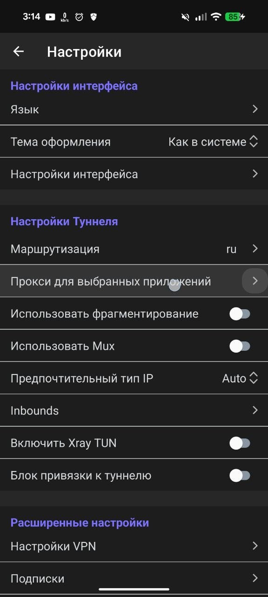
Шаг 3. Выберите приложения для обхода
Переключитесь на вкладку Обход в верхней части экрана. В открывшемся списке найдите приложения, которые должны работать без VPN (для быстрого поиска воспользуйтесь значком лупы в правом верхнем углу), и поставьте напротив них галочки.
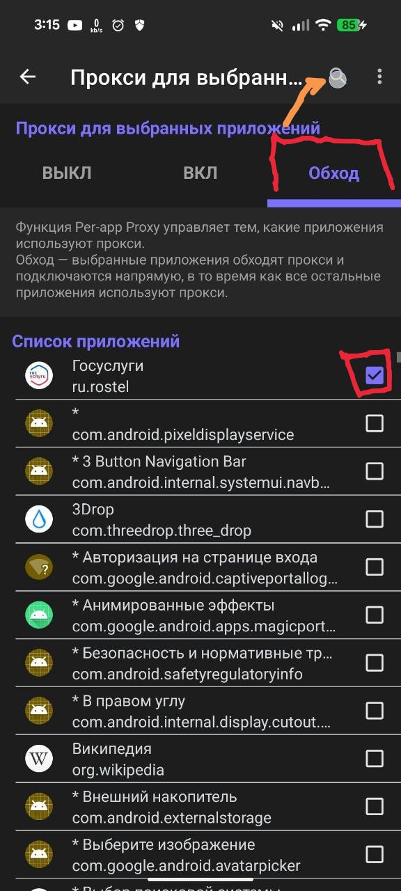
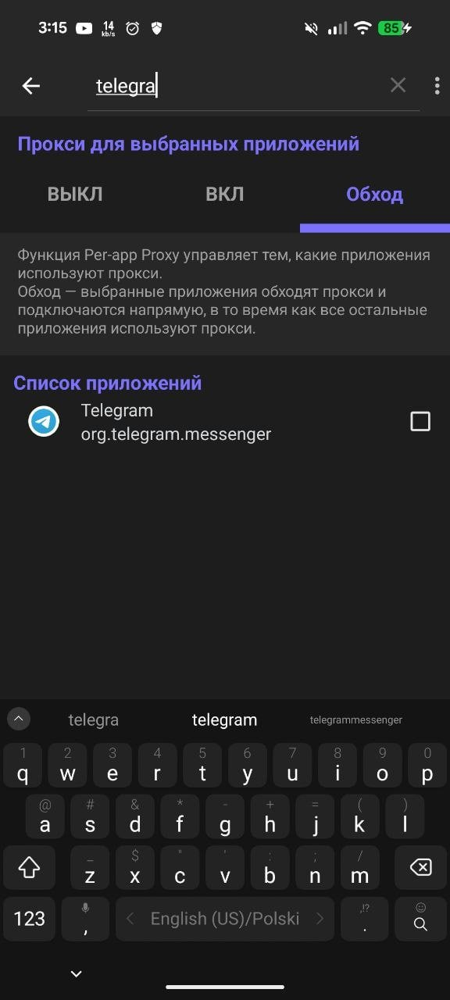
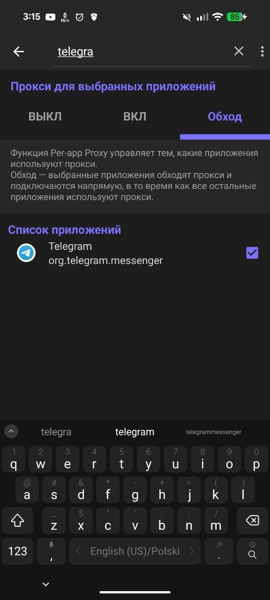